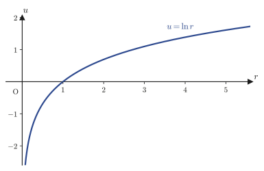

第44章座標変換とラプラシアン
第19章で，スカラー場 $f(x,y,z)$ に対するラプラシアン（Laplacian）$\Delta f=\nabla^2f=\pdiff{^2f}{x^2}+\pdiff{^2f}{y^2}+\pdiff{^2f}{z^2}$ を「勾配の発散」として定義した．そして第42・43章では，弦の振動や熱の伝わり方が，このラプラシアンを含む偏微分方程式（波動方程式・熱伝導方程式）に従うことを見てきた．ところが，第43章で扱った例は長方形の板や有限の長さの弦——つまり直交座標がそのまま自然に使える形——ばかりであった．もし考えたい領域が円い太鼓の膜であったら，あるいは円柱形の金属棒や，球形の原子核のまわりの電子雲であったらどうだろうか．境界の形が円や球であるとき，直交座標のラプラシアン $\partial^2/\partial x^2+\partial^2/\partial y^2+\partial^2/\partial z^2$ をそのまま使おうとすると，境界条件を書くだけで一苦労する．本章の目標はただ一つ，同じラプラシアンという演算子を，対称性に合わせた座標（極座標・円柱座標・球座標）で書き直すことである．
道具立てはすでに全部そろっている．第6章で学んだ多変数関数の連鎖律（chain rule）を，$x=r\cos\theta,\ y=r\sin\theta$ という座標変換に繰り返し適用するだけである．ただし「繰り返し適用する」という一言の中に，2階の偏微分・積の微分公式・三角関数の恒等式が何重にも絡み合う，大学数学でも指折りに手間のかかる計算が隠れている．ノート（底本）はこの計算を極座標については最後まで書き切り，円柱座標は結果だけを一行で済ませ，球座標では計算の途中——最初の1行——で力尽きて白紙のページが3枚続くという，なんとも人間味のある終わり方をしている．本章では，ノートが力尽きた球座標の計算も含めて，3種類の座標系すべてについて最後まで導出をやり遂げる．そして球座標については，ノートが辿ったのとは別の，ずっと見通しの良い近道も紹介する．この近道の種明かしは「極座標の計算結果を，変数の名前を付け替えて2回使い回す」という意外性のあるものである．
- 多変数の連鎖律を使って，直交座標のラプラシアン $\partial^2/\partial x^2+\partial^2/\partial y^2$ を極座標 $\nabla^2=\partial^2/\partial r^2+(1/r)\partial/\partial r+(1/r^2)\partial^2/\partial\theta^2$ に書き換える計算を，1行も飛ばさずに追う
- 途中に現れる $r_x,\theta_x,r_{xx},\theta_{xx}$ などの記号が何を意味するか，何を固定して何で微分しているか
- 円柱座標のラプラシアン $\nabla^2=\partial^2/\partial r^2+(1/r)\partial/\partial r+(1/r^2)\partial^2/\partial\theta^2+\partial^2/\partial z^2$ が，極座標の結果に $z$ の項を足すだけで得られる理由
- 球座標のラプラシアン $\nabla^2=\partial^2/\partial r^2+(2/r)\partial/\partial r+(1/r^2)\partial^2/\partial\theta^2+\dfrac{\cos\theta}{r^2\sin\theta}\partial/\partial\theta+\dfrac{1}{r^2\sin^2\theta}\partial^2/\partial\varphi^2$ を，直接の連鎖律計算と，極座標の結果を使い回す近道の両方で導く
- 調和関数（$\nabla^2u=0$ を満たす関数）の具体例——$\ln r$，$1/r$（クーロン電位），$r^2\cos2\theta$，$r^2(3\cos^2\theta-1)/2$——をそれぞれの座標系のラプラシアン公式で確認する
- 次章以降で球座標・円柱座標のシュレーディンガー方程式，水素原子の波動関数を扱うための土台を固める
もとにしたノート：望月泰英『数学ノート 偏微分方程式』 pp. 23–28．
44.1 なぜ座標を変えるのか — 対称性とラプラシアン
ノートの見出し「2階線形偏微分方程式」の右の欄外には，「Cylindrical Coordinate / Spherical Coordinate」という書き込みがある．これは，このあと44.3節・44.4節で円柱座標・球座標を扱うという，著者自身による予告のメモである（本章はこの予告どおり，44.2節の極座標に続けて，44.3節で円柱座標，44.4節で球座標のラプラシアンを扱う）．
まず，直交座標のラプラシアンで境界条件を書くとどれくらい面倒なのかを，具体的な図で見ておこう．半径 $R$ の円い太鼓の膜（あるいは，円形の断面を持つ棒の温度分布）を考える．膜（板）の外周，つまり境界での条件は，極座標を使えば
$$ r=R $$という，これ以上ないほど単純な1本の式で書ける．ところが同じ境界を直交座標で書こうとすると，
$$ x^2+y^2=R^2 $$となり，$x$ と $y$ が分離できない形になってしまう．偏微分方程式を変数分離法（第43章）で解こうとすると，境界条件が $x,y$ を分離できない形をしている時点で，直交座標のままでは手も足も出ない．一方，極座標の境界条件 $r=R$ は「$r$ を固定して$\theta$ を動かす」という形にきれいに分離されているので，変数分離法との相性が抜群に良い．
なぜ？：座標を変えても「同じ関数」を表したい
ここで注意したいのは，座標を変えても，関数 $u$ そのものは変わらないということである．たとえば温度分布 $u$ は，太鼓の膜の各点にただ1つの実数（温度）を対応させる規則であって，その点を $(x,y)$ という名前で呼ぶか $(r,\theta)$ という名前で呼ぶかは，人間の都合にすぎない．変わるのは，$u$ を「何の関数として」書くか，つまり $u=u(x,y)$ と書くか $u=u(r,\theta)$ と書くかだけである．偏微分方程式 $\partial^2u/\partial x^2+\partial^2u/\partial y^2=0$ も，$u$ という同じ関数について成り立つ関係式である以上，$r,\theta$ を使って書き直すことができるはずであり，実際に書き直した形が本章で求める式である．
この書き直しの道具は，第6章で学んだ連鎖律（chain rule）である．一般に，$u$ が $r,\theta$ の関数で，$r,\theta$ がさらに $x,y$ の関数であるとき（$u(r(x,y),\theta(x,y))$ という「関数の関数」になっている），$u$ を $x$ で偏微分するには
\begin{equation} \pdiff ux=\pdiff ur\pdiff rx+\pdiff u\theta\pdiff{\theta}{x} \label{eq:44-chainrule-general} \end{equation}という連鎖律を使う．この先，式が長くなるので，偏微分を表すのに $\partial u/\partial x$ の代わりに下つき文字（下添字）$u_x$ という記法を使う．同様に $u_{xx}=\partial^2u/\partial x^2$，$u_{r\theta}=\partial^2u/\partial r\,\partial\theta$ である．この記法を使うと，式\eqref{eq:44-chainrule-general}は
\begin{equation} u_x=u_r r_x+u_\theta\theta_x \label{eq:44-chainrule-short} \end{equation}と短く書ける．ここで $r_x=\partial r/\partial x$，$\theta_x=\partial\theta/\partial x$ は，$r(x,y),\theta(x,y)$ という関数を $x$ で偏微分したもの（$y$ を固定して $x$ だけ動かしたときの $r,\theta$ の変化率）であって，$u$ とは無関係にあらかじめ計算できる量である．次節では，まずこの $r_x,\theta_x$ をはじめとする「座標変換の偏微分」をすべて計算し，それから式\eqref{eq:44-chainrule-short}を2回使って $u_{xx}$ まで組み立てる，という手順を踏む．
例題44.1 連鎖律の検算 — $u=r$ の場合
$u(x,y)=\sqrt{x^2+y^2}$（つまり $u=r$）について，点 $(x,y)=(3,4)$ における $u_x$ を，(a) 直交座標で直接偏微分して求める方法と，(b) 式\eqref{eq:44-chainrule-short}の連鎖律を使う方法の2通りで計算し，一致することを確かめよ．ただし (b) では $u_r=1,\ u_\theta=0$（$u=r$ は $\theta$ に依存しない）であることと，次節で導く $r_x=\cos\theta$，$\theta_x=-\sin\theta/r$ を使ってよい．
解答 (a) 直接偏微分すると $u_x=\pdiff{}{x}\sqrt{x^2+y^2}=\dfrac{x}{\sqrt{x^2+y^2}}$ であるから，$(3,4)$ を代入して
$$ u_x\big|_{(3,4)}=\frac{3}{\sqrt{3^2+4^2}}=\frac{3}{5} $$(b) 連鎖律\eqref{eq:44-chainrule-short}を使うと $u_x=u_r r_x+u_\theta\theta_x=1\cdot\cos\theta+0\cdot\left(-\dfrac{\sin\theta}{r}\right)=\cos\theta$ である．点 $(3,4)$ では $r=\sqrt{3^2+4^2}=5$，$\cos\theta=x/r=3/5$ であるから，
$$ u_x\big|_{(3,4)}=\cos\theta=\frac{3}{5} $$となり，(a) の結果 $3/5$ と一致する．（sympyで検算．）このように，連鎖律を使う計算は一見遠回りに見えるが，$u$ を $r,\theta$ の簡単な式（この例では $u=r$）として扱える場合には，直接 $x,y$ で微分するよりも見通しがよくなることが多い．次節の目標は，この連鎖律を $u_{xx}+u_{yy}$（2階微分の和）にまで適用しきることである．
44.2 極座標におけるラプラシアンの導出
定義44.1 極座標（polar coordinates）
平面上の点 $(x,y)$（原点以外）に対して，原点からの距離 $r$（$r\gt0$）と，$x$ 軸の正の向きから反時計まわりに測った角 $\theta$（$0\le\theta\lt2\pi$，ラジアン単位）の組 $(r,\theta)$ を，その点の極座標という．直交座標との関係は
\begin{equation} \begin{cases} x=r\cos\theta \\ y=r\sin\theta \end{cases} \qquad\Longleftrightarrow\qquad \begin{cases} r=\sqrt{x^2+y^2} \\ \theta=\tan^{-1}\dfrac yx \end{cases} \label{eq:44-polar-def} \end{equation}である．ここで $\tan^{-1}$ は正接（タンジェント）の逆関数（アークタンジェント）で，$\tan\theta=y/x$ を満たす角 $\theta$ を返す．ただし $\tan^{-1}$ だけでは $x,y$ の符号（＝点がどの象限にあるか）が分からないので，実際に $\theta$ を決めるときは $x,y$ の符号を見て象限を判定する必要がある（本章の計算では $\theta$ を微分するだけなので，この点は気にしなくてよい）．
目標は，直交座標のラプラシアン $u_{xx}+u_{yy}$（$u=u(x,y)$ は2回偏微分可能な任意の関数とする）を，式\eqref{eq:44-polar-def}を使って $r,\theta$ の偏微分だけで書き直すことである．そのために，まず $r,\theta$ を $x,y$ で偏微分した基本的な量を計算しておく．なお，偏微分 $\partial r/\partial x$ を計算するときは「$y$ を固定して $x$ だけを動かす」ということを常に意識してほしい（他の偏微分もすべて同様である）．
導出（1）— $r_x,\theta_x,r_{xx},\theta_{xx}$ の計算
式\eqref{eq:44-polar-def}の $r=\sqrt{x^2+y^2}$ を，$y$ を定数とみなして $x$ で偏微分する．$\sqrt{\ }$ の微分は合成関数の微分（$\left(\sqrt{f}\right)'=f'/(2\sqrt f)$）なので，
$$ r_x=\pdiff rx=\pdiff{}{x}\sqrt{x^2+y^2}=\frac{2x}{2\sqrt{x^2+y^2}}=\frac{x}{\sqrt{x^2+y^2}}=\frac xr $$ここで最後の等号は $r=\sqrt{x^2+y^2}$ を使って分母を $r$ に置き換えただけである．さらに $x=r\cos\theta$（式\eqref{eq:44-polar-def}）を代入すれば，
\begin{equation} r_x=\frac{r\cos\theta}{r}=\cos\theta \label{eq:44-rx} \end{equation}を得る．次に $\theta=\tan^{-1}(y/x)$ を $x$ で偏微分する．アークタンジェントの微分公式 $\left(\tan^{-1}f\right)'=f'/(1+f^2)$（$f=y/x$，$f'=\partial f/\partial x=-y/x^2$，$y$ を固定して商の微分公式を使った）を使うと，
$$ \theta_x=\pdiff{}{x}\tan^{-1}\frac yx=\left(-\frac{y}{x^2}\right)\cdot\frac{1}{1+\left(\dfrac yx\right)^2}=-\frac{y}{x^2+y^2} $$（最後の等号は，$1+(y/x)^2=(x^2+y^2)/x^2$ の逆数 $x^2/(x^2+y^2)$ を $-y/x^2$ に掛けて $x^2$ を約分した．）$x^2+y^2=r^2$，$y=r\sin\theta$ を代入すると，
\begin{equation} \theta_x=-\frac{r\sin\theta}{r^2}=-\frac{\sin\theta}{r} \label{eq:44-thetax} \end{equation}となる．続いて2階微分 $r_{xx},\theta_{xx}$ を求める．$r_{xx}=\partial r_x/\partial x$ だが，式\eqref{eq:44-rx}の $r_x=\cos\theta$ は $x$ の関数として直接書かれていない（$\theta$ を経由している）ので，ここでも連鎖律が必要になる．$\cos\theta$ を $x$ で微分するには，$\theta$ が $x$ の関数であることに注意して合成関数の微分公式を使う：
\begin{equation} r_{xx}=\pdiff{}{x}(\cos\theta)=\pdiff{}{\theta}(\cos\theta)\cdot\pdiff{\theta}{x}=(-\sin\theta)\cdot\left(-\frac{\sin\theta}{r}\right)=\frac{\sin^2\theta}{r} \label{eq:44-rxx} \end{equation}（式\eqref{eq:44-thetax}の $\theta_x=-\sin\theta/r$ を代入した．）同様に $\theta_{xx}=\partial\theta_x/\partial x$ は，今度は式\eqref{eq:44-thetax}の $\theta_x=-\sin\theta/r$ が $\theta$ と $r$ の両方を含むので，積の微分公式と連鎖律を同時に使う：
$$ \theta_{xx}=\pdiff{}{x}\left(-\frac{\sin\theta}{r}\right) =\pdiff{}{r}\!\left(-\frac{\sin\theta}{r}\right)\!\pdiff rx+\pdiff{}{\theta}\!\left(-\frac{\sin\theta}{r}\right)\!\pdiff{\theta}{x} =\frac{\sin\theta}{r^2}\cdot\cos\theta+\left(-\frac{\cos\theta}{r}\right)\!\left(-\frac{\sin\theta}{r}\right) $$（1つ目の項は $-\sin\theta/r$ を $r$ で偏微分（$\theta$ は定数扱い）して $\sin\theta/r^2$，これに $r_x=\cos\theta$ を掛けた．2つ目の項は $-\sin\theta/r$ を $\theta$ で偏微分（$r$ は定数扱い）して $-\cos\theta/r$，これに $\theta_x=-\sin\theta/r$ を掛けた．）2つの項はどちらも $\sin\theta\cos\theta/r^2$ の形をしているので，
\begin{equation} \theta_{xx}=\frac{\sin\theta\cos\theta}{r^2}+\frac{\sin\theta\cos\theta}{r^2}=\frac{2\sin\theta\cos\theta}{r^2} \label{eq:44-thetaxx} \end{equation}とまとまる．以上で $x$ に関する1階・2階の偏微分がすべてそろった．
次に，これらを使って $u_x,u_{xx}$ を組み立てる．$u=u(x,y)$ を $r,\theta$ の関数 $u(r(x,y),\theta(x,y))$ とみなし，式\eqref{eq:44-chainrule-short}の連鎖律をそのまま適用すると，
\begin{equation} u_x=u_r r_x+u_\theta\theta_x \label{eq:44-ux} \end{equation}である．これをもう一度 $x$ で偏微分して $u_{xx}$ を作る．右辺は「（$x$ の関数）×（$x$ の関数）」の和なので，積の微分公式を2回使うことになる：
\begin{equation} u_{xx}=\pdiff{}{x}u_x=\pdiff{}{x}(u_r r_x)+\pdiff{}{x}(u_\theta\theta_x) =\bigl(u_{rx}r_x+u_r r_{xx}\bigr)+\bigl(u_{\theta x}\theta_x+u_\theta\theta_{xx}\bigr) \label{eq:44-uxx-setup} \end{equation}（$u_r r_x$ を積の微分公式で微分すると，$u_r$ を微分した項 $u_{rx}r_x$ と，$r_x$ を微分した項 $u_r r_{xx}$ の和になる．$u_\theta\theta_x$ も同様．）ここで現れた $u_{rx}=\partial u_r/\partial x$，$u_{\theta x}=\partial u_\theta/\partial x$ も，$u_r,u_\theta$ が $r,\theta$ の関数であることを思い出せば，式\eqref{eq:44-ux}とまったく同じ形の連鎖律で書ける：
\begin{equation} u_{rx}=u_{rr}r_x+u_{r\theta}\theta_x,\qquad u_{\theta x}=u_{\theta r}r_x+u_{\theta\theta}\theta_x \label{eq:44-urx-uthetax} \end{equation}式\eqref{eq:44-urx-uthetax}を式\eqref{eq:44-uxx-setup}に代入すると，
\begin{equation} u_{xx}=\bigl\{(u_{rr}r_x+u_{r\theta}\theta_x)r_x+u_r r_{xx}\bigr\}+\bigl\{(u_{\theta r}r_x+u_{\theta\theta}\theta_x)\theta_x+u_\theta\theta_{xx}\bigr\} \label{eq:44-uxx-expand} \end{equation}を得る．あとは式\eqref{eq:44-rx}〜\eqref{eq:44-thetaxx}で求めた $r_x=\cos\theta,\ \theta_x=-\sin\theta/r,\ r_{xx}=\sin^2\theta/r,\ \theta_{xx}=2\sin\theta\cos\theta/r^2$ を代入するだけである：
\begin{equation} u_{xx}=\left(u_{rr}\cos\theta-u_{r\theta}\frac{\sin\theta}{r}\right)\cos\theta+u_r\frac{\sin^2\theta}{r} -\left(u_{\theta r}\cos\theta-u_{\theta\theta}\frac{\sin\theta}{r}\right)\frac{\sin\theta}{r}+u_\theta\frac{2\sin\theta\cos\theta}{r^2} \label{eq:44-uxx-substituted} \end{equation}ここで，$u$ が2回連続微分可能であればシュワルツの定理（第6章定理6.1）より混合偏微分の順序は交換できる，つまり $u_{r\theta}=u_{\theta r}$ である．この事実を使って式\eqref{eq:44-uxx-substituted}の$u_{r\theta}$ と $u_{\theta r}$ を含む2つの項をまとめると（どちらも係数 $-\sin\theta\cos\theta/r$ を持つので），
\begin{equation} \boxed{u_{xx}=\cos^2\theta\,u_{rr}-\frac{2\sin\theta\cos\theta}{r}u_{r\theta}+\frac{\sin^2\theta}{r}u_r+\frac{\sin^2\theta}{r^2}u_{\theta\theta}+\frac{2\sin\theta\cos\theta}{r^2}u_\theta} \label{eq:44-uxx-final} \end{equation}という，$x$ 方向の2階偏微分の最終形が得られる．次に，まったく同じ手順を $y$ 方向についても繰り返す．
導出（2）— $r_y,\theta_y,r_{yy},\theta_{yy}$ の計算と $u_{yy}$
今度は $x$ を固定して $y$ で偏微分する．$r=\sqrt{x^2+y^2}$ より
\begin{equation} r_y=\frac{y}{\sqrt{x^2+y^2}}=\frac yr=\frac{r\sin\theta}{r}=\sin\theta \label{eq:44-ry} \end{equation}（計算の流れは $r_x$ のときと同じで，$y=r\sin\theta$ を代入しただけである．）$\theta=\tan^{-1}(y/x)$ を $y$ で偏微分すると，今度は $\partial(y/x)/\partial y=1/x$（$x$ を固定）なので，
\begin{equation} \theta_y=\frac{1}{x}\cdot\frac{1}{1+\left(\dfrac yx\right)^2}=\frac{x}{x^2+y^2}=\frac{r\cos\theta}{r^2}=\frac{\cos\theta}{r} \label{eq:44-thetay} \end{equation}である．2階微分も $x$ のときと同じ手順で，
\begin{equation} r_{yy}=\pdiff{}{\theta}(\sin\theta)\cdot\theta_y=\cos\theta\cdot\frac{\cos\theta}{r}=\frac{\cos^2\theta}{r} \label{eq:44-ryy} \end{equation} \begin{equation} \theta_{yy}=\pdiff{}{r}\!\left(\frac{\cos\theta}{r}\right)\!r_y+\pdiff{}{\theta}\!\left(\frac{\cos\theta}{r}\right)\!\theta_y =-\frac{\cos\theta}{r^2}\cdot\sin\theta-\frac{\sin\theta}{r}\cdot\frac{\cos\theta}{r}=-\frac{2\sin\theta\cos\theta}{r^2} \label{eq:44-thetayy} \end{equation}となる（符号が $\theta_{xx}$ とちょうど逆になっていることに注意）．これらを使って，式\eqref{eq:44-uxx-setup}〜\eqref{eq:44-uxx-final}とまったく同じ手順（$x\to y$ に読み替えるだけ）を繰り返すと，
$$ u_y=u_r r_y+u_\theta\theta_y,\qquad u_{yy}=\bigl\{(u_{rr}r_y+u_{r\theta}\theta_y)r_y+u_r r_{yy}\bigr\}+\bigl\{(u_{\theta r}r_y+u_{\theta\theta}\theta_y)\theta_y+u_\theta\theta_{yy}\bigr\} $$に式\eqref{eq:44-ry}〜\eqref{eq:44-thetayy}を代入し，同じくシュワルツの定理で $u_{r\theta}=u_{\theta r}$ をまとめると，
\begin{equation} \boxed{u_{yy}=\sin^2\theta\,u_{rr}+\frac{2\sin\theta\cos\theta}{r}u_{r\theta}+\frac{\cos^2\theta}{r}u_r+\frac{\cos^2\theta}{r^2}u_{\theta\theta}-\frac{2\sin\theta\cos\theta}{r^2}u_\theta} \label{eq:44-uyy-final} \end{equation}が得られる．
導出（3）— $u_{xx}+u_{yy}$ の完成
式\eqref{eq:44-uxx-final}と式\eqref{eq:44-uyy-final}を並べて書き，辺々を足し合わせよう．
$$ \begin{aligned} u_{xx}&=\cos^2\theta\,u_{rr}-\frac{2\sin\theta\cos\theta}{r}u_{r\theta}+\frac{\sin^2\theta}{r}u_r+\frac{\sin^2\theta}{r^2}u_{\theta\theta}+\frac{2\sin\theta\cos\theta}{r^2}u_\theta\\[4pt] u_{yy}&=\sin^2\theta\,u_{rr}+\frac{2\sin\theta\cos\theta}{r}u_{r\theta}+\frac{\cos^2\theta}{r}u_r+\frac{\cos^2\theta}{r^2}u_{\theta\theta}-\frac{2\sin\theta\cos\theta}{r^2}u_\theta \end{aligned} $$この2つの式は，$u_{r\theta}$ の係数（$\mp2\sin\theta\cos\theta/r$）どうし，そして最後の $u_\theta$ の係数（$\pm2\sin\theta\cos\theta/r^2$）どうしが，符号だけ逆で大きさが同じになっている．つまり足し合わせると，この2組はちょうど打ち消し合って消える（ノートの原本にも，この2組の項に「打ち消し合う」ことを示す斜線のチェックマークが実際に書き込まれている）．残るのは $u_{rr}$ の係数 $\cos^2\theta+\sin^2\theta=1$ と，$u_r$ の係数 $\dfrac{\sin^2\theta}{r}+\dfrac{\cos^2\theta}{r}=\dfrac1r$，$u_{\theta\theta}$ の係数 $\dfrac{\sin^2\theta}{r^2}+\dfrac{\cos^2\theta}{r^2}=\dfrac1{r^2}$（いずれも三角関数の基本公式 $\sin^2\theta+\cos^2\theta=1$ を使った）だけであり，
$$ \nabla^2u=u_{xx}+u_{yy}=u_{rr}+\frac1r u_r+\frac{1}{r^2}u_{\theta\theta} $$という，$\theta$ を含まないきわめて簡潔な形にまとまる．
公式44.1 極座標のラプラシアン
\begin{equation} \nabla^2=\pdiff{^2}{r^2}+\frac1r\pdiff{}{r}+\frac{1}{r^2}\pdiff{^2}{\theta^2} \label{eq:44-laplacian-polar} \end{equation}すなわち，2回微分可能な関数 $u(r,\theta)$ に対して
$$ \nabla^2u=\pdiff{^2u}{r^2}+\frac1r\pdiff ur+\frac{1}{r^2}\pdiff{^2u}{\theta^2} $$である．さらに，最初の2項 $u_{rr}+\dfrac1r u_r$ は，積の微分公式を逆にたどると
$$ \frac1r\pdiff{}{r}\!\left(r\pdiff ur\right)=\frac1r\left(\pdiff ur+r\,u_{rr}\right)=u_{rr}+\frac1r u_r $$とまとめられる（$r\,u_r$ を $r$ で微分すると，積の微分公式で $u_r+r\,u_{rr}$ になることを確かめよ）．したがって，公式\eqref{eq:44-laplacian-polar}は次のようにも書ける：
\begin{equation} \nabla^2=\frac1r\pdiff{}{r}\!\left(r\pdiff{}{r}\right)+\frac{1}{r^2}\pdiff{^2}{\theta^2} \label{eq:44-laplacian-polar-alt} \end{equation}この形は，後の章（球座標・円柱座標でのシュレーディンガー方程式，第47・48章）で動径方向の方程式を扱うときに繰り返し登場する，覚えておく価値のある表示である．
イメージ：なぜ $1/r$ や $1/r^2$ が付くのか
直交座標のラプラシアン $u_{xx}+u_{yy}$ には，$x,y$ という2つの方向に「余分な係数なし」で2階微分が並んでいた．これは，直交座標の基底ベクトル（$x$方向・$y$方向）が，空間のどこでも向きも大きさも変わらないからである．ところが極座標では，$\theta$ 方向に「1目盛り」動くときの実際の距離は，原点から遠い（$r$ が大きい）ほど長くなる（半径 $r$ の円周上を角度 $\Delta\theta$ だけ動く弧の長さは $r\,\Delta\theta$ である）．つまり $\theta$ 方向の微分 $\partial/\partial\theta$ を「実際の距離あたりの変化率」に直すには，$r$ で割る補正が必要になる．公式\eqref{eq:44-laplacian-polar}の $u_{\theta\theta}$ の項に $1/r^2$（$\theta$ を2回使うので2乗）が付くのは，まさにこの「$\theta$ 方向の目盛りが $r$ に依存する」という極座標特有の事情を反映している．
例題44.2 調和関数の確認 — $u=r^2\cos2\theta$
$u=r^2\cos2\theta$ が，$r\gt0$ のすべての点でラプラス方程式 $\nabla^2u=0$ を満たすこと（このような関数を調和関数，harmonic function と呼ぶ）を，公式44.1を使って確認せよ．
解答 $u_r=2r\cos2\theta$，$u_{rr}=2\cos2\theta$．また $u_{\theta\theta}=\partial^2/\partial\theta^2(r^2\cos2\theta)=r^2\cdot(-4\cos2\theta)=-4r^2\cos2\theta$．これらを公式44.1に代入すると，
$$ \nabla^2u=2\cos2\theta+\frac1r\cdot2r\cos2\theta+\frac{1}{r^2}\cdot(-4r^2\cos2\theta)=2\cos2\theta+2\cos2\theta-4\cos2\theta=0 $$となり，たしかにラプラス方程式を満たす．実は $\cos2\theta=\cos^2\theta-\sin^2\theta$ なので $r^2\cos2\theta=r^2\cos^2\theta-r^2\sin^2\theta=x^2-y^2$ であり，直交座標で見れば $\nabla^2(x^2-y^2)=2-2=0$ という当たり前の事実にすぎない（sympyで両方の計算が一致することを検算済み）．同じ関数を2通りの座標系で計算しても答えが一致するというのは，本章の冒頭（44.1節）で述べた「座標を変えても関数そのものは変わらない」ことの具体的な確認になっている．なお $u=x^2-y^2$ は，実部・虚部が調和関数になるという複素関数論の性質（第24章のコーシー・リーマンの方程式）で再び登場する，由緒正しい調和関数である．
例題44.3 $r$ だけに依存する調和関数 — $\ln r$
$u$ が $\theta$ に依存せず $r$ だけの関数 $u=u(r)$ であるとき，ラプラス方程式 $\nabla^2u=0$ を満たす $u(r)$ をすべて求めよ．また，$u=\ln r$（$r\gt0$）がその1つであることを確認せよ．
解答 $u$ が $\theta$ を含まないので $u_{\theta\theta}=0$ であり，公式44.1より $\nabla^2u=0$ は
$$ u_{rr}+\frac1r u_r=0 $$という，$r$ だけの常微分方程式になる（第33章の1階常微分方程式の解法が使える形にするため，$v=u_r$ とおく）．$v=u_r$ とおくと $v_r+\dfrac1r v=0$，すなわち $\dfrac{dv}{v}=-\dfrac{dr}{r}$（変数分離形，第33章）．両辺を積分すると $\ln\abs v=-\ln r+C_1$．ここで両辺の指数をとると $\abs v=e^{-\ln r+C_1}=e^{C_1}\cdot e^{-\ln r}=e^{C_1}\cdot r^{-1}$（指数法則 $e^{a+b}=e^ae^b$ と，$e^{-\ln r}=1/e^{\ln r}=1/r$ を使った）となり，絶対値をはずすときの符号を定数 $C=\pm e^{C_1}$ に吸収させれば，すなわち $v=\dfrac{C}{r}$（$C$ は定数）．さらに $u_r=v=C/r$ を積分すると
$$ u=C\ln r+D\qquad(C,D\text{ は任意定数}) $$が一般解である．特に $C=1,D=0$ とすれば $u=\ln r$ となり，これがラプラス方程式の解の1つであることが分かる．実際，$u=\ln r$ なら $u_r=1/r$，$u_{rr}=-1/r^2$ であるから $u_{rr}+\dfrac1r u_r=-\dfrac1{r^2}+\dfrac1r\cdot\dfrac1r=0$ で直接確かめられる（sympyで検算済み）．この $u=\ln r$ は，原点を除く平面上で調和な関数の代表例であり，2次元の静電ポテンシャルや，後の章で学ぶグリーン関数の基本解として自然に現れる．

44.3 円柱座標におけるラプラシアン
定義44.2 円柱座標（cylindrical coordinates）
空間の点 $(x,y,z)$ に対して，$xy$平面への正射影が極座標 $(r,\theta)$ を持ち，高さが $z$ であるとき，組 $(r,\theta,z)$ をその点の円柱座標という．直交座標との関係は
\begin{equation} \begin{cases} x=r\cos\theta \\ y=r\sin\theta \\ z=z \end{cases} \label{eq:44-cyl-def} \end{equation}である．つまり，円柱座標は平面の極座標 $(r,\theta)$ に，向きも大きさも変わらない $z$ 軸をそのまま1本追加しただけのものである（第16章16.2節でも同じ定義を，基底ベクトルの立場から扱った）．名前の由来は，$r$ を一定にして $\theta,z$ を動かすと，ちょうど円柱の側面が描かれることによる．
導出：円柱座標のラプラシアン — なぜ $z$ の項をそのまま足せるのか
円柱座標のラプラシアンを求めるには，改めて連鎖律を最初からやり直す必要はない．式\eqref{eq:44-cyl-def}を見ると，$r,\theta$ は $x,y$ だけで決まり，$z$ は $z$ 自身に等しい（$x,y$ にはいっさい依存しない）．つまり，$z$ という変数は $x,y,r,\theta$ から完全に独立している．したがって，$u(x,y,z)$ を $x$ や $y$ で偏微分するとき，$z$ は単なる定数として扱われるので，44.2節で行った $u_{xx},u_{yy}$ の計算はそのまま（$u$ の中に $z$ が入っていても）成立する．一方，$u$ を $z$ で偏微分するときは，逆に $x,y$（したがって $r,\theta$）を定数として扱うだけであり，$r,\theta$ 方向の計算とはいっさい混ざらない（$r_z=\theta_z=0$，$z_x=z_y=0$ である）．よって，直交座標の3次元ラプラシアン
$$ \nabla^2u=u_{xx}+u_{yy}+u_{zz} $$のうち，$u_{xx}+u_{yy}$ の部分は公式44.1（式\eqref{eq:44-laplacian-polar}）でそのまま $r,\theta$ の式に置き換えられ，$u_{zz}$ の部分はまったく変更を受けずにそのまま残る．
公式44.2 円柱座標のラプラシアン
\begin{equation} \nabla^2=\pdiff{^2}{r^2}+\frac1r\pdiff{}{r}+\frac{1}{r^2}\pdiff{^2}{\theta^2}+\pdiff{^2}{z^2} \label{eq:44-laplacian-cyl} \end{equation}例題44.4 $z$ に依存しない場合は極座標に一致する — $u=r^3\cos3\theta$
$u=r^3\cos3\theta$（$z$ を含まない）が円柱座標のラプラス方程式 $\nabla^2u=0$ を満たすことを，公式44.2を使って確認せよ．また，この結果が44.2節の極座標の議論だけからも得られることを説明せよ．
解答 $u_r=3r^2\cos3\theta$，$u_{rr}=6r\cos3\theta$，$u_{\theta\theta}=-9r^3\cos3\theta$，$u_{zz}=0$（$u$ に $z$ が含まれないため）．公式44.2に代入すると，
$$ \nabla^2u=6r\cos3\theta+\frac1r\cdot3r^2\cos3\theta+\frac{1}{r^2}\cdot(-9r^3\cos3\theta)+0=6r\cos3\theta+3r\cos3\theta-9r\cos3\theta=0 $$となり満たされる．実際，$u$ が $z$ を含まなければ $u_{zz}=0$ なので，公式44.2は公式44.1（極座標のラプラシアン）とまったく同じ式に退化する．つまり「$z$ に依存しない関数については，円柱座標も極座標も同じ答えを与える」のは，公式44.2の作り方（44.2節の結果に $u_{zz}$ を足しただけ）から当然の帰結である．（sympyで検算済み．）
例題44.5 $z$ に依存する調和関数 — $u=r^2-2z^2$
$u=r^2-2z^2$（円柱座標，$z$ に依存する）がラプラス方程式を満たすことを確認せよ．
解答 $u_r=2r$，$u_{rr}=2$，$u_{\theta\theta}=0$（$\theta$ を含まない），$u_{zz}=-4$．公式44.2より，
$$ \nabla^2u=2+\frac1r\cdot2r+0+(-4)=2+2-4=0 $$である．直交座標で見ると $u=(x^2+y^2)-2z^2$ なので，$\nabla^2u=2+2-4=0$ と即座に確かめられ，両者は一致する（sympyで検算済み）．この形の調和関数は，電磁気学で軸対称な電場（四重極子など）を表すときに現れる．
44.4 球座標におけるラプラシアン
定義44.3 球座標（spherical coordinates）
空間の点 $(x,y,z)$（原点以外）に対して，原点からの距離 $r$（$r\gt0$），$z$軸の正の向きから測った角 $\theta$（$0\le\theta\le\pi$，天頂角，zenith angle），$xy$平面上で $x$軸から反時計まわりに測った角 $\varphi$（$0\le\varphi\lt2\pi$，方位角，azimuthal angle）の組 $(r,\theta,\varphi)$ を，その点の球座標という．直交座標との関係は
\begin{equation} \begin{cases} x=r\sin\theta\cos\varphi \\ y=r\sin\theta\sin\varphi \\ z=r\cos\theta \end{cases} \qquad\Longleftrightarrow\qquad \begin{cases} r=\sqrt{x^2+y^2+z^2} \\ \theta=\tan^{-1}\dfrac{\sqrt{x^2+y^2}}{z} \\ \varphi=\tan^{-1}\dfrac yx \end{cases} \label{eq:44-sph-def} \end{equation}である．
注意：$\theta,\varphi$ の役割，そして文字「$r$」の使い回し
本章では極座標・円柱座標・球座標のどれについても，動径（原点または軸からの距離）を同じ文字 $r$ で書いている．これはノートの記法をそのまま踏襲したものだが，実は同じ文字でも節ごとに意味が違う（極座標の $r$ は原点からの距離，円柱座標の $r$ は $z$軸からの距離，球座標の $r$ は原点からの距離）．第16章では球座標の動径を区別のために大文字 $R$ で書いていたが，本章はノートの流儀にあわせて小文字 $r$ で通す．どちらの文字を使うかは教科書ごとの流儀の違いにすぎないので，読むときは前後の文脈（何座標の話をしているか）で判断してほしい．また，天頂角 $\theta$・方位角 $\varphi$ という呼び方と役割の割り当ては物理でよく使う慣習（$z$軸から測る角を $\theta$，$xy$平面内の角を $\varphi$）であり，数学の教科書によっては $\theta,\varphi$ の役割が入れ替わっていることがある．本章では常に「$z=r\cos\theta$」（$\theta$ は $z$軸からの角）という定義44.3の割り当てで統一する．
ノート（底本）は，44.1節の連鎖律をそのまま球座標にも適用しようとして，$r_x,\theta_x,\varphi_x$ の計算に取りかかったところで力尽き，そのあと3ページ（p.26〜p.28）が白紙のまま次章（第45章，シュレーディンガー方程式）に移っている．本節では，まずノートが着手しかけた直接の連鎖律計算を実際に最後まで走らせ（1階の偏微分だけ），次に，それとは別の，44.2節の結果を使い回すぐっと見通しの良い近道でも同じ公式を導く．
導出（直接法）— $r_x,\theta_x,\varphi_x$ など9個の1階偏微分
式\eqref{eq:44-sph-def}の逆変換 $r=\sqrt{x^2+y^2+z^2}$，$\theta=\tan^{-1}\bigl(\sqrt{x^2+y^2}/z\bigr)$，$\varphi=\tan^{-1}(y/x)$ を，44.2節とまったく同じやり方（1つの変数を固定して残りで偏微分する）で計算する．まず $r_x$ は，$r=\sqrt{x^2+y^2+z^2}$ を $x$ で偏微分して
\begin{equation} r_x=\frac{x}{\sqrt{x^2+y^2+z^2}}=\frac xr=\frac{r\sin\theta\cos\varphi}{r}=\sin\theta\cos\varphi \label{eq:44-sph-rx} \end{equation}($x=r\sin\theta\cos\varphi$ を代入した）．$\theta_x$ は，$\theta=\tan^{-1}(\sqrt{x^2+y^2}/z)$ を $x$ で偏微分する．$f=\sqrt{x^2+y^2}/z$ とおくと $f_x=\dfrac{x}{z\sqrt{x^2+y^2}}$ であり，アークタンジェントの微分公式 $(\tan^{-1}f)_x=f_x/(1+f^2)$ に $1+f^2=1+\dfrac{x^2+y^2}{z^2}=\dfrac{r^2}{z^2}$（$x^2+y^2+z^2=r^2$ を使った）を使うと，
\begin{equation} \theta_x=\frac{x}{z\sqrt{x^2+y^2}}\cdot\frac{z^2}{r^2}=\frac{xz}{r^2\sqrt{x^2+y^2}} =\frac{(r\sin\theta\cos\varphi)(r\cos\theta)}{r^2\cdot r\sin\theta}=\frac{\cos\theta\cos\varphi}{r} \label{eq:44-sph-thetax} \end{equation}（$\sqrt{x^2+y^2}=\sqrt{r^2\sin^2\theta}=r\sin\theta$（$0\le\theta\le\pi$ で $\sin\theta\ge0$ だから絶対値ははずせる）を使った．）$\varphi_x$ は，$\varphi=\tan^{-1}(y/x)$ の $x$ 微分なので，44.2節の $\theta_x$（式\eqref{eq:44-thetax}）とまったく同じ計算になり，ただし「極座標の $r$」の代わりに「$xy$平面内の動径 $\rho$（ロー，rho）$=\sqrt{x^2+y^2}=r\sin\theta$」が現れる：
\begin{equation} \varphi_x=-\frac{y}{x^2+y^2}=-\frac{y}{\rho^2}=-\frac{r\sin\theta\sin\varphi}{r^2\sin^2\theta}=-\frac{\sin\varphi}{r\sin\theta} \label{eq:44-sph-phix} \end{equation}まったく同様に（$x\leftrightarrow y$ の役割を入れ替えて）$y$ に関する偏微分も計算できる：
\begin{equation} r_y=\sin\theta\sin\varphi,\qquad \theta_y=\frac{\cos\theta\sin\varphi}{r},\qquad \varphi_y=\frac{\cos\varphi}{r\sin\theta} \label{eq:44-sph-y} \end{equation}最後に $z$ に関する偏微分は，$r=\sqrt{x^2+y^2+z^2}$ より $r_z=z/r=\cos\theta$．$\varphi=\tan^{-1}(y/x)$ は $z$ を含まないので $\varphi_z=0$．$\theta_z$ は，$\theta=\tan^{-1}(\sqrt{x^2+y^2}/z)$ を $z$ で偏微分すると（$f=\sqrt{x^2+y^2}/z$，$f_z=-\sqrt{x^2+y^2}/z^2$），
\begin{equation} \theta_z=\frac{-\sqrt{x^2+y^2}/z^2}{1+(x^2+y^2)/z^2}=-\frac{\sqrt{x^2+y^2}}{r^2}=-\frac{r\sin\theta}{r^2}=-\frac{\sin\theta}{r} \label{eq:44-sph-z} \end{equation}とまとまる．以上で（sympyでも検算済みの）9個の1階偏微分がすべてそろった：
\begin{equation} \begin{array}{lll} r_x=\sin\theta\cos\varphi, & \theta_x=\dfrac{\cos\theta\cos\varphi}{r}, & \varphi_x=-\dfrac{\sin\varphi}{r\sin\theta},\\[6pt] r_y=\sin\theta\sin\varphi, & \theta_y=\dfrac{\cos\theta\sin\varphi}{r}, & \varphi_y=\dfrac{\cos\varphi}{r\sin\theta},\\[6pt] r_z=\cos\theta, & \theta_z=-\dfrac{\sin\theta}{r}, & \varphi_z=0. \end{array} \label{eq:44-sph-all9} \end{equation}ここで面白いことに気づく．$\varphi_x,\varphi_y$ の形（式\eqref{eq:44-sph-phix}と\eqref{eq:44-sph-y}）は，44.2節の $\theta_x,\theta_y$（式\eqref{eq:44-thetax},\eqref{eq:44-thetay}）とまったく同じ形で，ただ $r$ が $\rho=r\sin\theta$ に置き換わっただけである．これは偶然ではない．$\theta$（したがって $z,\rho$）を固定したまま $\varphi$ だけを動かすと，点は $xy$平面に平行な，半径 $\rho=r\sin\theta$ の円周上を動く——つまり，$\varphi$ を測る計算は，半径 $\rho$ の平面極座標の $\theta$ を測る計算とまったく同じ問題なのである．この観察が，次に紹介する近道の伏線になっている．
ここから先，44.2節と同じ手順（式\eqref{eq:44-uxx-setup}〜\eqref{eq:44-uxx-final}に相当する計算）を $x,y,z$ の3方向について行えば，原理的には球座標のラプラシアンに到達できる．ただし変数が2つから3つに増えるので，2階微分の項数も掛け算的に増え（$u_{rr},u_{\theta\theta},u_{\varphi\varphi},u_{r\theta},u_{r\varphi},u_{\theta\varphi}$ の6種類が絡む），手計算では非常に長くなる．この直接ルートを最後まで完成させる作業は，本章末の演習44.4にまわすことにして，ここでは同じ結論に速く到達できる別ルートを紹介しよう．
導出（近道）— 44.2節の結果を2回使い回す
球座標の動径 $r$ と天頂角 $\theta$ は，円柱座標の動径 $\rho$（$z$軸からの距離）と高さ $z$ を使うと，
\begin{equation} \rho=r\sin\theta,\qquad z=r\cos\theta \label{eq:44-sph-cyl-relation} \end{equation}という関係にある（定義44.3の $x,y$ の式から $\sqrt{x^2+y^2}=r\sin\theta=\rho$，$z=r\cos\theta$ を取り出しただけである）．ここで式\eqref{eq:44-sph-cyl-relation}をよく見てほしい．これは「$z$ が $r\cos\theta$，$\rho$ が $r\sin\theta$」という，44.2節の $x=r\cos\theta,\ y=r\sin\theta$（式\eqref{eq:44-polar-def}）とまったく同じ形の関係式であり，違いは変数の名前（$x\to z$，$y\to\rho$）だけである．連鎖律の計算は，変数に何と名前を付けるかとは無関係な，純粋に形式的な代数の手続きだから，44.2節で求めた結果は，$x\to z,\ y\to\rho$ と読み替えるだけでそのまま使い回せる．具体的には，式\eqref{eq:44-ry},\eqref{eq:44-thetay}（$r_y=\sin\theta,\ \theta_y=\cos\theta/r$）を読み替えて，
\begin{equation} r_\rho=\sin\theta,\qquad \theta_\rho=\frac{\cos\theta}{r} \label{eq:44-r-rho} \end{equation}を得る（これは式\eqref{eq:44-sph-all9}の $\varphi_x,\varphi_y$ が44.2節の $\theta_x,\theta_y$ と同じ形だったのと同じ理由による，一貫した対応関係である）．同様に，公式44.1（式\eqref{eq:44-laplacian-polar}）を $x\to z,\ y\to\rho$ で読み替えれば，「$z,\rho$ 平面（子午面）での2階偏微分の和」が $r,\theta$ の式に書き換えられる：
\begin{equation} u_{zz}+u_{\rho\rho}=u_{rr}+\frac1r u_r+\frac{1}{r^2}u_{\theta\theta} \label{eq:44-meridian-flat} \end{equation}（sympyで，具体的な関数をいくつも代入してこの読み替えが正しいことを検算済み．）
さて，公式44.2（円柱座標のラプラシアン，式\eqref{eq:44-laplacian-cyl}）を，動径を $\rho$ と書いて改めて書くと
\begin{equation} \nabla^2u=\underbrace{u_{\rho\rho}+u_{zz}}_{\text{式\eqref{eq:44-meridian-flat}で置き換え済み}}+\ \frac1\rho u_\rho\ +\ \frac{1}{\rho^2}u_{\varphi\varphi} \label{eq:44-cyl-with-rho} \end{equation}である．右辺の最初の2項は式\eqref{eq:44-meridian-flat}で片付いたので，残るは $\dfrac1\rho u_\rho$ と $\dfrac{1}{\rho^2}u_{\varphi\varphi}$ の2項だけである．$u_{\varphi\varphi}$ の項は，$\varphi$ が $\rho,z$ とも $r,\theta$ とも無関係な独立変数なので（$\varphi$ を固定して考えれば $(\rho,z)\leftrightarrow(r,\theta)$ は普通の平面極座標の関係にすぎない），$\rho=r\sin\theta$ を代入するだけで
\begin{equation} \frac{1}{\rho^2}u_{\varphi\varphi}=\frac{1}{r^2\sin^2\theta}u_{\varphi\varphi} \label{eq:44-phiphi-term} \end{equation}と書き直せる．残る $\dfrac1\rho u_\rho$ は，$u_\rho=u_r r_\rho+u_\theta\theta_\rho$（連鎖律，式\eqref{eq:44-r-rho}を使う）に注意すると，
\begin{equation} \frac1\rho u_\rho=\frac{1}{r\sin\theta}\left(u_r\sin\theta+u_\theta\frac{\cos\theta}{r}\right)=\frac1r u_r+\frac{\cos\theta}{r^2\sin\theta}u_\theta \label{eq:44-leftover-term} \end{equation}となる．式\eqref{eq:44-meridian-flat}，\eqref{eq:44-phiphi-term}，\eqref{eq:44-leftover-term}をすべて式\eqref{eq:44-cyl-with-rho}に集めると，
$$ \nabla^2u=u_{rr}+\frac1r u_r+\frac{1}{r^2}u_{\theta\theta}+\frac1r u_r+\frac{\cos\theta}{r^2\sin\theta}u_\theta+\frac{1}{r^2\sin^2\theta}u_{\varphi\varphi} $$となり，$u_r$ の項が2つとも同じ係数 $1/r$ を持つのでまとめられて（$\dfrac1r+\dfrac1r=\dfrac2r$），
\begin{equation} \nabla^2u=u_{rr}+\frac2r u_r+\frac{1}{r^2}u_{\theta\theta}+\frac{\cos\theta}{r^2\sin\theta}u_\theta+\frac{1}{r^2\sin^2\theta}u_{\varphi\varphi} \label{eq:44-laplacian-sph-derived} \end{equation}という球座標のラプラシアンが得られる．（sympyで，複数のテスト関数について直交座標からの直接計算と一致することを検算済み．）
公式44.3 球座標のラプラシアン
\begin{equation} \nabla^2=\pdiff{^2}{r^2}+\frac2r\pdiff{}{r}+\frac{1}{r^2}\pdiff{^2}{\theta^2}+\frac{\cos\theta}{r^2\sin\theta}\pdiff{}{\theta}+\frac{1}{r^2\sin^2\theta}\pdiff{^2}{\varphi^2} \label{eq:44-laplacian-sph} \end{equation}イメージ：なぜノートはここで力尽きたのか
ノートの著者が直接の連鎖律計算を球座標の $r_x$ を求めたところで止めてしまったのは，おそらく偶然ではない．次に取り組む話題（p.029〜，ノートの次章「Schrödinger Equation」）は，直交座標での量子力学の導入である．球座標での量子力学（水素原子，第48章）はそのさらに先の話題であり，本章の球座標ラプラシアンが実際に必要になるのはそこまで進んでからである．おそらく，直交座標の量子力学を先に片付けることを優先し，手間のかかる球座標の直接計算は後回しにした——という予定の変更が，このノートの白紙のページに残っているのだろう．本章では，先回りしてその「後回し」にした計算を，近道を使って片付けてしまったことになる．
例題44.6 クーロン電位の調和性 — $u=1/r$
$u=1/r$（原点を除く空間）が球座標のラプラス方程式 $\nabla^2u=0$ を満たすことを，公式44.3を使って確認せよ．
解答 $u=1/r$ は $\theta,\varphi$ を含まないので $u_\theta=u_{\theta\theta}=u_{\varphi\varphi}=0$ である．$u_r=-1/r^2$，$u_{rr}=2/r^3$ だから，公式44.3に代入すると
$$ \nabla^2u=\frac{2}{r^3}+\frac2r\cdot\left(-\frac{1}{r^2}\right)+0+0+0=\frac{2}{r^3}-\frac{2}{r^3}=0 $$となり，たしかにラプラス方程式を満たす（sympyで検算済み）．この $u=1/r$ は，電荷（あるいは質量）から距離 $r$ だけ離れた点でのクーロン電位（あるいは重力ポテンシャル）$\propto1/r$ そのものであり，原点（電荷や質量が置かれている点）を除けば真空中で調和関数になる，という電磁気学・重力理論の基本事実に対応している．第48章の水素原子の波動関数でも，この $1/r$ ポテンシャルが主役を演じる．
例題44.7 四重極型の調和関数 — $u=\dfrac{r^2(3\cos^2\theta-1)}{2}$
$u=\dfrac{r^2(3\cos^2\theta-1)}{2}$ が球座標のラプラス方程式を満たすことを確認せよ．
解答 $u_r=r(3\cos^2\theta-1)$，$u_{rr}=3\cos^2\theta-1$．$\theta$ については，$u_\theta=r^2\cdot\dfrac12\cdot(-6\cos\theta\sin\theta)=-3r^2\sin\theta\cos\theta$，$u_{\theta\theta}=-3r^2(\cos^2\theta-\sin^2\theta)=-3r^2\cos2\theta$（あるいは $-3r^2(2\cos^2\theta-1)$）．$u_{\varphi\varphi}=0$（$\varphi$ に依存しない）．これらを公式44.3に代入すると，
$$ \nabla^2u=(3\cos^2\theta-1)+\frac2r\cdot r(3\cos^2\theta-1)+\frac{1}{r^2}\bigl(-3r^2(2\cos^2\theta-1)\bigr)+\frac{\cos\theta}{r^2\sin\theta}\cdot(-3r^2\sin\theta\cos\theta)+0 $$ $$ =(3\cos^2\theta-1)+2(3\cos^2\theta-1)-3(2\cos^2\theta-1)-3\cos^2\theta $$括弧をすべて展開して $\cos^2\theta$ の係数と定数項をそれぞれ集めると，$\cos^2\theta$ の係数は $3+6-6-3=0$，定数項は $-1-2+3=0$ となり，全体で $\nabla^2u=0$ である（sympyで検算済み）．この関数は，$\cos\theta$ の2次式 $\frac12(3\cos^2\theta-1)$ の部分がルジャンドル多項式（第40章）$P_2(\cos\theta)$ に他ならず，$u=r^2P_2(\cos\theta)$ という形の調和関数は，電荷分布のつくる電場を多重極展開するときの「四重極子（quadrupole）」成分や，第48章で学ぶ水素原子の $d$ 軌道の角度分布と同じ数学的な形をしている．
44.5 まとめと演習
44.5.1 まとめ
- 座標を変えても関数そのものは変わらない．変わるのは「何の関数として書くか」だけであり，直交座標のラプラシアン $u_{xx}+u_{yy}(+u_{zz})$ を，多変数の連鎖律 $u_x=u_r r_x+u_\theta\theta_x$ を繰り返し使って別の座標の偏微分に書き換えられる．
- 極座標では $r_x=\cos\theta,\ \theta_x=-\sin\theta/r$ など（式\eqref{eq:44-rx}〜\eqref{eq:44-thetaxx}）を求め，$u_{xx},u_{yy}$ を組み立てて足すと，$u_{r\theta}$ と $u_\theta$ の項がちょうど打ち消し合って簡潔な形に整理される．
- 円柱座標は，$z$ が $x,y$（したがって $r,\theta$）から完全に独立しているため，極座標の結果に $\partial^2/\partial z^2$ を足すだけで得られる．
- 球座標は，直接の連鎖律計算（ノートが中断した計算）を最後まで走らせることもできるが，$\rho=r\sin\theta,\ z=r\cos\theta$ という関係が極座標の $x=r\cos\theta,y=r\sin\theta$ と同じ形をしていることに気づけば，44.2節の結果を変数の名前を付け替えて2回使い回すだけで，同じ公式にずっと速くたどり着ける．
- 3つの座標系のラプラシアンと，調和関数（$\nabla^2u=0$ の解）の代表例を次にまとめる．
このうち極座標・円柱座標のラプラシアンは，第47章（極座標・円柱座標のシュレーディンガー方程式とベッセル関数）で，球座標のラプラシアンは第48章（水素原子のシュレーディンガー方程式）で，それぞれ変数分離法（第43章）を適用する出発点として使われる．そこでは，本章で「$\theta$方向の項」としてまとめた部分がルジャンドルの微分方程式（第40章）やベッセルの微分方程式（第41章）に化けていく様子を見ることになる．
44.5.2 演習問題
演習44.1 極座標での $\nabla^2(r^2)$
極座標で $u=r^2$ のとき，公式44.1を使って $\nabla^2u$ を計算せよ．また，直交座標で $u=x^2+y^2$ として直接計算した結果と一致することを確かめよ．
ヒント：$u$ は $\theta$ を含まないので $u_{\theta\theta}=0$ である．
演習44.2 球座標での $u=z$ の調和性
球座標で $u=r\cos\theta$（$=z$）が，公式44.3のもとでラプラス方程式 $\nabla^2u=0$ を満たすことを直接代入で確認せよ．
ヒント：$u$ は $\varphi$ を含まないので $u_{\varphi\varphi}=0$．$u_\theta,u_{\theta\theta}$ を求めて代入する．
演習44.3 円柱座標のラプラシアンの理由を再現せよ
44.3節の「導出：円柱座標のラプラシアン」の議論を，自分の言葉で（式を使いながら）再現せよ．すなわち，なぜ $z$ 方向の2階微分 $u_{zz}$ を，極座標の結果にそのまま足すだけでよいのかを説明せよ．
ヒント：$r,\theta$ が $z$ に依存するか，$z$ が $x,y$ に依存するかを考える．
演習44.4 球座標ラプラシアンの直接法を完成させよ
44.4節の「導出（直接法）」で求めた9個の1階偏微分（式\eqref{eq:44-sph-all9}）を使って，44.2節の式\eqref{eq:44-uxx-setup}〜\eqref{eq:44-uxx-final}と同じ手順（$u_x=u_r r_x+u_\theta\theta_x+u_\varphi\varphi_x$ から出発し，もう一度 $x$ で微分する）で，$u_{xx}$ を $u_{rr},u_{\theta\theta},u_{\varphi\varphi},u_{r\theta},u_{r\varphi},u_{\theta\varphi},u_r,u_\theta,u_\varphi$ の式として書き下せ（$y,z$ 方向は行わなくてよい）．
ヒント：今度は3変数なので，$u_x=u_r r_x+u_\theta\theta_x+u_\varphi\varphi_x$ を $x$ でもう一度微分すると，$u_{rx},u_{\theta x},u_{\varphi x}$ の3つがそれぞれ3項の連鎖律を持つ（例えば $u_{rx}=u_{rr}r_x+u_{r\theta}\theta_x+u_{r\varphi}\varphi_x$）．積の微分公式を根気よく適用すれば，最終的に9種類の2階偏微分がすべて現れる式にたどり着く．
演習44.5 球座標での $u=x$ の調和性
球座標で $u=r\sin\theta\cos\varphi$（$=x$）が，公式44.3のもとでラプラス方程式を満たすことを直接代入で確認せよ．
ヒント：今度は $u_\varphi,u_{\varphi\varphi}$ も $0$ ではない．$\varphi$ を含む項をすべて計算する必要がある．
演習44.6 球座標での $x^2-y^2$ の調和性
球座標で $u=r^2\sin^2\theta\cos2\varphi$（$=x^2-y^2$）が，公式44.3のもとでラプラス方程式を満たすことを確認せよ．
ヒント：$\sin^2\theta\cos2\varphi=\sin^2\theta(\cos^2\varphi-\sin^2\varphi)=(\sin\theta\cos\varphi)^2-(\sin\theta\sin\varphi)^2$ に注意すると，直交座標の $x^2-y^2$ に一致することが確かめられる．
44.5.3 参考文献
- 望月泰英『数学ノート 偏微分方程式』（手書き講義ノート）．本章の底本．
- 寺沢寛一『自然科学者のための数学概論』岩波書店．
- W. E. Boyce, R. C. DiPrima, D. B. Meade, Elementary Differential Equations and Boundary Value Problems, Wiley．